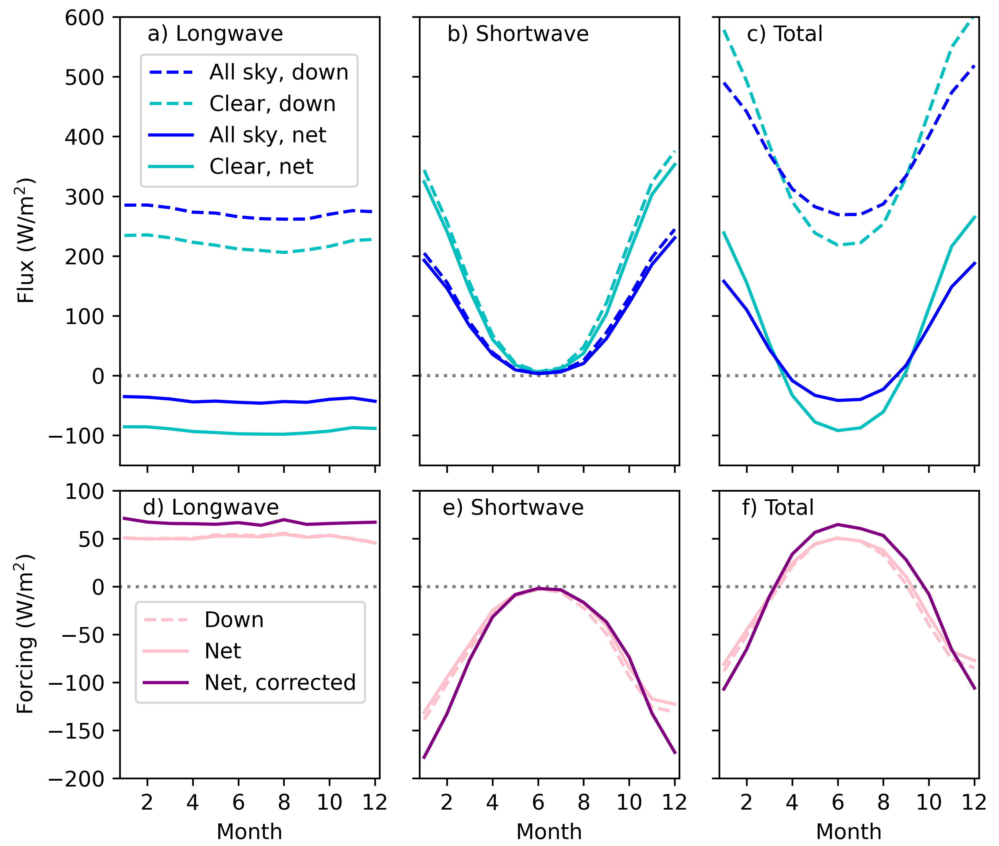

Research
Clouds and Radiation over the Southern Ocean
Through interactions with infrared and shortwave radiation, clouds have competing cooling and warming effects. The overall effect depends on location, date, time, and cloud properties. Working with colleagues at the Chilean Antarctic Research Group, we have been measuring radiation and clouds at Escudero Station, situated on King George Island in the Southern Ocean, just north of the Antarctic Peninsula, since 2017. The goal of this research is to improve our understanding of cloud and radiation processes, particularly during atmospheric rivers and foehn events. This work is part of the Year of Polar Prediction (YOPP) for the Southern Hemisphere.
Pyranometer
Pyrgeometers and pyranometers are used to measure downwelling longwave radiation (infrared) and shortwave radiation (sunlight). The pyranometer shown here measures shortwave radiation every minute year-round at Escudero Station, just north of the Antarctic Peninsula.Radiation
Downwelling longwave radiation and shortwave radiation at Escudero Station over several days in February 2019.Annual cycle of radiation
To see the how radiation over the annual cycle, it's useful to average over each month. Here we see that the monthly average longwave radiation is fairly constant over the year at Escudero Station, while the shortwave radiation varies strongly with season, falling to almost zero in the Austral winter. This figure shows the average over each month, over the years 2017-2023, from the ECMWF Reanaylsis product ERA5.
Polar Education Modules
Polar ENgagement through GUided INquiry (PENGUIN) is an NSF-funded project to develop modules that teach polar research through undergraduate students in a variety of courses.

PENGUIN modules are available here:

Quantum Mechanics Module
Students examine rotational vibrational transitions in spectra and plot the greenhouse effect.
Student surveys
Student surveys tested statistics knowledge gains, comparing students who took statistics with and without working through a PENGUIN statistics module.
Cloud Property Retrievals
Algorithms such as optimal estimation for retrieving cloud properties are sensitive to instrumental considerations such as calibration and instrument responsivity, sources of error such as biases, noise and error in knowledge of the atmospheric state, and limited spectral resolution. Cloud property retrievals include optical depth, thermodynamic phase, effective radius and cloud base-height retrieval.

Index of Refraction
Radiative transfer calculations of supercooled liquid cloud absorption and emission of infrared radiation relies on incorporating the temperature dependence of the complex refractive indices of supercooled water.

Index of refraction of liquid water
This figure shows the imaginary part of the complex-valued index of refraction of liquid water, at 240 K. This result was created by interpolating and extrapolating the results from laboratory studies at varying frequencies and temperatures.
Black carbon
Black carbon is an anthropogenic pollutant that decreases the albedo of ice and snow. In the Chilean Andes, black carbon on glaciers enhances the melt rate. Because glaciers are an important source of drinking water in Chile, glacier loss is a topic of major concern. I participated in field expeditions (led by Steven Neshyba, in collaboration with Steve Warren of the University of Washington and Raul Cordero of the University of Santiago of Chile) to sample black carbon on snow in the Chilean Andes in July 2015 and 2016. Our group at the University of Santiago of Chile continues to measure black carbon in the Chilean Andes, as well as in Antarctica.
During the summer of 2020, we expanded our black carbon measurements to include locations in Colorado and on Mt. Rainier, in Washington, as part of a virtual summer Research Experience for Undergraduates (REU) program. Two students sampled snow, while two additional students measured the impurity concentrations using the Light Absorbing Measurement (LAM), developed by Prof. Carl Schmitt.

Snow sampling
Snow sampling involved first digging a snow pit and then collecting samples successively deeper.